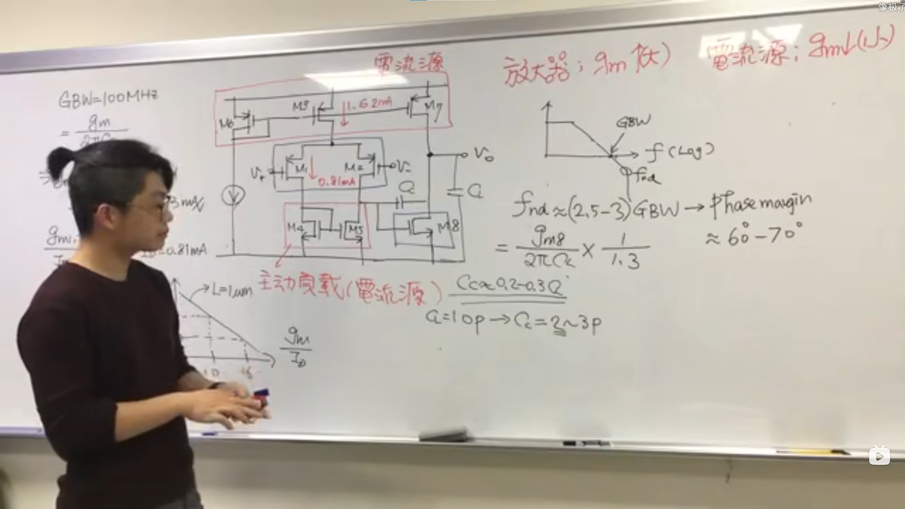
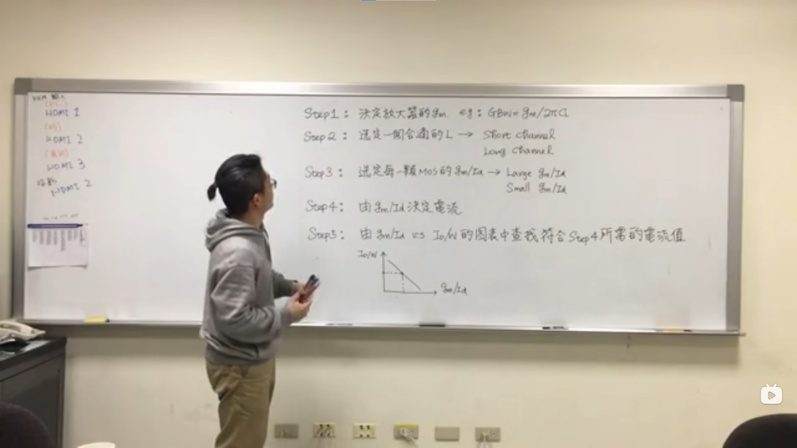
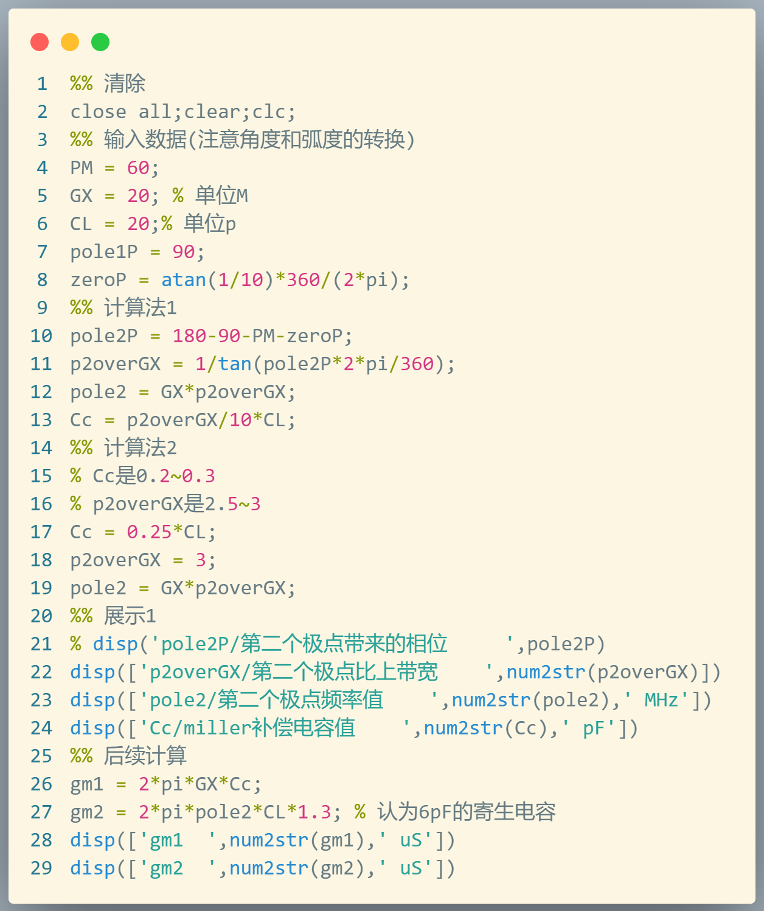
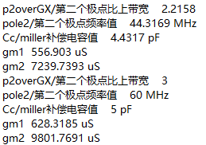

Introduce: This is a log for the anlog IC design group 17. Everthing in the process of this design can be record in this log.
Author: UpstreamWind
Am: Just learn how to use the cadence, and the demonstration is maked.
Pm and night: design the 5 tube OTA, how to design a two stage OPA, and learn the technique evaluation.
| 指标 | 设计指标 | 计算指标 | 仿真结果 |
|---|---|---|---|
| VDD | 3.3 | 3.3 | 3.3 |
| GAIN | >50db | ||
| GBW | >100Mhz | ||
| CL | 1pf | 1pf | 1pf |
| 指标 | 设计指标 | 计算指标 | 仿真结果 |
|---|---|---|---|
| VDD | 3.3 | 3.3 | 3.3 |
| GAIN | >50db | 56.279840db | 54.5032db |
| GBW | >100MHz | 143.63MHz | 113.37MHz |
| CL | 1pf | 1pf | 1pf |
| 以下是我们的一些计算指标的计算过程过程： |
AM： 工艺评估
PM： 五管数据记录+二级运放1设计
Night: 二级运放2设计
12.5
phase margin为60度对应的频率应该为0.62wp2（下图有有解释）对应的增益为1时候的情况。
暂时还没有考虑零点带来的影响，值得注意的一点是，由于在之前的分析中忽略了镜像极点，所以一共有三个极点，分别是输出极点，两级运放中间的极点，镜像极点，应当仔细分析这三个极点的的大小顺序。
12.6
gm/ID的方法来进行设计中的方法评估来计算电路来进行电路设计（这个认为是工艺评估中的一部分）,从下面这个视屏中学习得到。（【The gmid methodology, a design guideline for two stage miller OP】 https://www.bilibili.com/video/BV1PZ4y1g7cZ/?share_source=copy_web&vd_source=aa4641ffa1428b9b417d1c648edda95b）
gm/Id=2/Vov,近似相等，所以选取一个晶体管的gm/Id,就是选择偏置电压。
| cellview | 什么 |
|---|---|
| 5TUBEOTA_IN_BANDGAP | 用在带隙基准里面的运放 |
| 5TUBEOTA_IN_BANDGAP_TESTBENCH | 对应的tb |
| BANDGAP_VOLTAGE_TESTBENCH | 对应的tb |
| BANDGAP_VOLTAGE | 带隙基准 |
| OPA5_TUBE_CS | 理想电流源的二级运放 |
| OPA_5TUBE_CS_TESTBENCH | 对应的tb |
| OTA_5 | 一级五管运放 |
| OTA_5_TESTBENCH | 一级五管运放对应的tb |
| TECH_EVAL | 工艺仿真 |
| TESH_CMRR | 共模抑制比仿真 |
| TESH_INP_OFFSET | 输入失调电压 |
| TESH_PSRR | 电源抑制比 |
1.4375k欧姆
loop loop hhh
做一个cascode的差分输入的放大器原来没有我想象的那么简单，对于提供一个电流源就是已经很复杂的一件事情了。
然后学完这个gm over id的这个方法之后，感受到的就是为什么没有早一点学习到这个方法😭。
不过下定论为时尚早，所以还看后面的努力啦。还有就是要好好地继续记录，因为前面好像几乎没什实质性地进展，所以前面干了些什么也没有实时性地记录下来，现在也只能凭着记忆来对之前干的事情进行一个简短的记录。
day1和day2在前面已经有很好地记录了，其中有些做了的事情实质上是浪费了很多时间且没有什么作用。比如进行ppt上面所描述的工艺评估，还有就是对一级放大器进行的一系列的测试和数据记录，结果使用了错误的方法（对差分对测量增益相位和频率的图）从而造成了测量的一系列也是错误的。不过写这些只是总结，并不是为了抱怨和推卸责任，毕竟要向前看啦😊。
所以day3和day4还有day5，我们主要也就是做了一些电路的设计，调试电路，这些方面的过程，我们做了很多，譬如思考如何设计一个合适的电流，还有跑工艺角之类的，不过最终还是吃了“儿童套餐”（也就是所谓的通过跑stb仿真，将输出端口和输入端口进行短接来实现输出的共模电平输出的稳定点，以此来轻松地通过了仿真）。
之后在day6，也就是现在我正在写这些东西的时候的昨天，上午半天考了Anlog IC的考试，下午和晚上去画了版图，版图大概画的差不多了，然后第二天的早上，也就是今天的早上，我的队友们花了一点的时间就画完了剩下的所有的版图，原谅我此时还在床上睡懒觉😁，之后他们花了大量的时间进行了drc，然后花了一点点时间进行了lvs，至于关于在其中他们的感想，就需要他们来记录了。
然后我今天主要学习了gm over id这个方法，上面已经具体提到过了，然后学习到对电路设计的另一条思路。我粗略地陈述一下两种设计思路。
第一种（课程ppt上面提供的方法）：
这个方法是PM出发，通过PM来计算（由于第一个极点可以完全提供90度，零点即使远离了GX的10倍频5.7度的相位贡献，所以计算出第二个极点应该是GX的多少倍才能保证PM，而这个多少倍就是一个用来确定Cc的值tan24.3）应需要的Cc使用了经验公式CC = p2overGX/10*CL，而这个p2overGX是通过PM来计算出来的，下面是我通过使用matlab进行的计算展示。
% 输入数据(注意角度和弧度的转换)
PM = 60;
GX = 20; % 单位M
CL = 20;% 单位p
pole1P = 90;
zeroP = atan(1/10)*360/(2*pi);
% 计算
pole2P = 180-90-PM-zeroP;
p2overGX = 1/tan(pole2P*2*pi/360);
pole2 = GX*p2overGX;
Cc = p2overGX/10*CL;
输出结果如下:
p2overGX = 2.2158
pole2 = 44.316 MHz
Cc = 4.4317 pF
得到Cc之后，便可以通过计算以下公式计算所需要得到的gm，通过gm得到电流id，这种方法中从gm得到id大概是使用了对管子的Vov进行了假设，使用gm=2Id/Vov这个公式，之后从电流得到宽长比，但是并不能得到一个确切的W和L，只能得到一个比值，这是我在设计中为什么计算出来的值不满足的一个原因之一，另一个原因就是在计算中的使用的一些参数（比如kn/kp/lumbda）都是在估算出来的，而其中的lumbda这个显然是随着沟道长度变化而变化的。下面的第二种方法则很好地解决了这个问题。
第二种方法：
gmid，通过gm/id来构建一个新的参数，对这个新的参数的intrinsic gain和current density进行仿真，按沟道长度扫描，后面将利用得到这些数据图像。这种设计方法与上一种相同的是同样根据带宽来确定gm，其中确定Cc直接使用经验值0.2~0.3倍的CL来确定，也是得到Cc之后通过带宽限制来求得第一级运放的跨导gm1，而对第二级如何来求，这个老师使用了这样一个经验公式，在下面图片中显示。但实际上这个数据和第一种方法是可以互相印证的，因为方法一计算所得的p2overGX是2.2158左右，Cc值也也就是0.22158倍，与本方法相对应的Cc取0.2~0.3倍是符合的，而本方法中的p2overGX经验公式取值是2.5~3倍这个范围中。方法一和方法二求gm的方法可以认为是一样的，其中像上图中所写的求gm2的时候对CL乘了1.3是考率到输出节点的寄生电容人为大概是负载的0.3倍。我再列出下列公式来讨论每个设计参数对于哪个方向来进行放缩可以达到留出更多的余度。
在上面确定了gm1和gm2之后，方法二与前面方法不同的且非常有用的就是通过gm来求Id，得到W和L的方法更准确。通过扫描得到两幅图像。取一个合适gm/id的值，通过增益曲线可以得到沟道长度取多少的时候达到合适的增益，在对gm/id来进行取值的同时也就可以得到电流的值，知道了id又拥有电流密度的图，并且沟道长度已经确定，就可以确定对应沟道长度曲线横坐标为所选gm/id的值对应的电流密度，从而求得W的值，至此一个晶体管的参数便全部设计完成。而multipler是一个需要注意的点，不同的multipler对应着不同的效果，所以对于不同multipler可以进行多个不同的工艺评估。
从这种方法中还学到的是，对于电流源为了减小噪声需要较小的gmoverid，而对于信号输入管，减小噪声则需要更大的gmoverid。
最后附上老师总结的是应该方法进行设计的步骤。
至此，对于这些方法的学习的总结就全部写完了，后面要做的就是使用gm/id方法来进行设计的过程中的记录。
因为从这个视频收益，所以将链接贴在了下面，感谢这个老师和转载者。
【The gmid methodology】 https://www.bilibili.com/video/BV1PZ4y1g7cZ/?p=9&share_source=copy_web&vd_source=aa4641ffa1428b9b417d1c648edda95b
开始仿真，得到相应图形，这里暂时就暂时不放相关图形了。
在设计中，暂时考虑将零点移动到无穷远处，即让R=1/gm2。
前面的方法已经陈述了设计思路，这里就不再赘述，便尽快一笔带过。通过下列matlab代码来代替讲述。

数据计算结果如下:分别计算了两种方法的数值

由于方法2更加地精准，后续的计算均按照方法二进行计算。
由于考虑到衬底耦合，从书上677页摘抄如下
同样在运放电路中最好采用PMOS差动输入，这是因为PMOS差动对所在的阱可以接到它们的共源端，减小了衬底噪声的影响。
所以考虑使用PMOS做为第一级的差动输入管，可以减小噪声，提高CMRR。